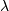

numpy.random.poisson¶
- numpy.random.poisson(lam=1.0, size=None)¶
Draw samples from a Poisson distribution.
The Poisson distribution is the limit of the Binomial distribution for large N.
Parameters : lam : float
Expectation of interval, should be >= 0.
size : int or tuple of ints, optional
Output shape. If the given shape is, e.g., (m, n, k), then m * n * k samples are drawn.
Notes
The Poisson distribution
For events with an expected separation  the Poisson distribution describes the probability of
 events occurring within the observed interval .
events occurring within the observed interval .Because the output is limited to the range of the C long type, a ValueError is raised when lam is within 10 sigma of the maximum representable value.
References
[R220] Weisstein, Eric W. “Poisson Distribution.” From MathWorld–A Wolfram Web Resource. http://mathworld.wolfram.com/PoissonDistribution.html [R221] Wikipedia, “Poisson distribution”, http://en.wikipedia.org/wiki/Poisson_distribution Examples
Draw samples from the distribution:
>>> import numpy as np >>> s = np.random.poisson(5, 10000)
Display histogram of the sample:
>>> import matplotlib.pyplot as plt >>> count, bins, ignored = plt.hist(s, 14, normed=True) >>> plt.show()
(Source code, png, pdf)
{kind=link}